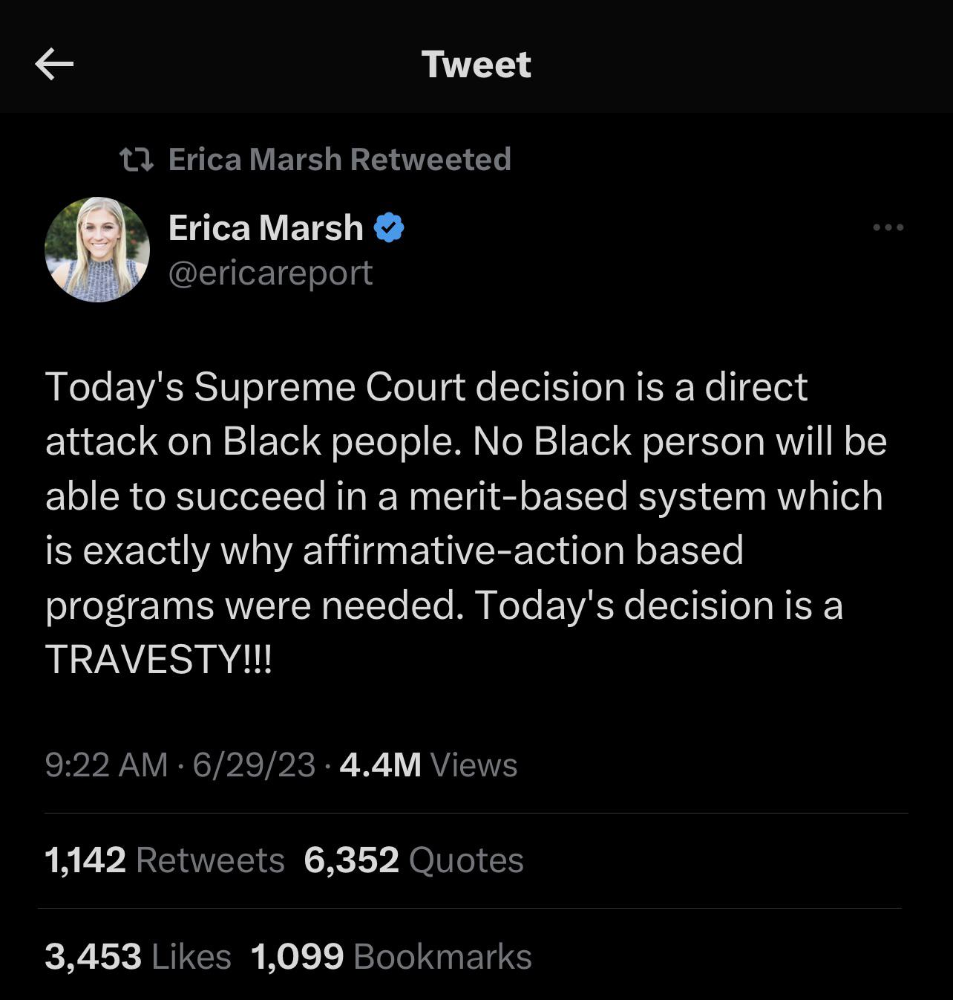

A Rational Analysis of “Social Justice”
1. The Nature of Discrimination
Every single one of us has the right to discriminate, and we use it every day. We discriminate when we decide who we are friends with and who we are not friends with. We discriminate when we decide which employer we work for. We discriminate when we buy this brand over that brand, and we discriminate when we choose which gym we go to, which bank we deposit our money in, who we have sex with, whether we worship God instead of Allah (or no God at all), etc. Discrimination is never inherently “bad” because it is always done from a subjective point of view. The right to discriminate is fundamental to Life.
1.1. Valuing Diversity Implies Valuing Discrimination
Valuing diversity should imply valuing discrimination, otherwise what value is there to be gained from having diversity? If there is variation, but no selection, there will be no improvements in the ideas or output. Likewise, if there is no diversity, then there would be no value to discriminating. If there is no variation, then there is nothing to select from.
If the left-wing worldview is taken to its logical conclusion, it would actually lead to complete racial segregation. They don’t believe that there are any important differences between people of different races, but if that’s the case, then there can’t be any possible benefit to diversity because we’re all the same. And yet they celebrate diversity, even though they have no reason why it would make anybody’s life better.
At the same time, there are supposed disadvantages that are created by being a minority, so the logical conclusion should be that the best thing to do would be to segregate everybody by race, so that nobody faces the disadvantages of being a minority.
If other cultures and peoples are so insightful, then why don’t the leftists live in those countries? The vast majority of leftists wouldn’t live anywhere else but the West, except maybe Japan and other Westernized countries. If immigration boosts economic growth by increasing the population and thus increasing the size of the economy, then that’s an argument for first-worlders to migrate to third-world countries, not the other way around.
1.2. Lookism Will Probably Never Go Away
Lookism will probably be the last form of discrimination to ever be eliminated. Not even the most hard-core leftists who claim to be obsessed with eliminating all forms of discrimination have recognized Lookism as a prevalent form of discrimination that exists basically everywhere.
In some cases, heightism can be classified as a subtype of lookism. Heightism is another form of discrimination that leftists don’t address, even though addressing it ought to be part of their worldview.
2. The Origin Of The Need For Diversity Equal Representation
When leftists use the word “diversity”, sometimes what they’re really talking about is their desire for equal representation of population subgroups into positions of power and influence. In my opinion, equal representation is the only case where “diversity” makes any sense, provided that it’s practical, increases political stability, and it’s not reasonably unachievable due to genetic and biological differences. “Equal Representation” is a better term because it communicates its goal more explicitly and doesn’t have any hidden agendas, unlike “Diversity” which is now a euphemism for anti-white racism, and rightfully carries negative connotations.
The need for equal representation originates whenever there is a sizable portion of the population that is distinctly different from the rest of the population. In countries that are racially and/or linguistically diverse like India, the United States, Nigeria, the DRC, etc, there are great efforts to promote equal representation in government, STEM jobs and research, the corporate world, etc, because the populations are diverse. In some cases, the drive for equal representation of all races has gone too far in Western countries to the point where it has lead to white people being nearly erased from advertising and much of the country’s mass media.
Since the United States had a sizable black population of about ~15% for over 200 years, black people in the United States felt excluded since the country still never had a black president until 2009.
If black people have always made up an average of about ~13% of the population of the US for the ~220 years for which the US has existed with a president as the head of government (starting with the enforcement of the US Constitution in 1789) up to the start of Obama’s presidency in 2009, then 220 * 0.13 = 28.60 years for which it would be proportionately “fair” for the US to have a black president, if we are working under the thesis that the goal of diversity equal representation is to represent every faction of the population equally.
The historical reasons why the United States never had a black president during the 19th and 20th centuries can be attributed to the social and legal inequality of blacks in comparison to whites.
Now that social and legal equality between blacks and whites has been achieved, genetic factors are the primary reason why the US is very unlikely to have proportionally as many black presidents as there are black people in the national population for the 21st century and beyond.
Hence, it’s not feasible nor reasonable for the US to have a proportionally “fair” percentage of black presidents in its future.
As another example, religion is a very polarizing topic in Nigeria where the population is split in nearly equal halves between Christianity and Islam. If the government and/or president of Nigeria was constantly represented by only one religion but not the other, this would disrupt the balance of power and national stability of the country. Thus, the Nigerian government must alternate between Christian-partisan and Islam-partisan leadership, lest the other side will feel excluded, perhaps even to the point where they will riot over it. Diversity between the two religions would be a less pressing issue if the country was split 95/5, 90/10, or even 80/20 on religion, one way or the other.
Theoretically at some point, some differences in a country’s population could become so small that the differences would basically become a non-issue, from the collective perspective of the entire population. In an ethnically homogenous country like Japan, Korea, Tunisia, etc, it wouldn’t make sense for the people in those countries to promote ethnic diversity in their leadership (government positions, corporation CEOs, representation in STEM, etc) because they are ethnically homogenous. An ethnically diverse government and corporate elite would not be representative of those countries. It probably depends on the context of the situation, but the insignificance of minority factions may have to be as small as 1/20, 1/50, 1/100, or perhaps even 1/1000 before the general population can safely ignore them without fearing any major consequences. Trans Activists who are in favor of stating pronouns believe that a population split of less than 1/100 is still big enough to warrant mandating everyone to state their pronouns, but I disagree on this for practical reasons. In the most general form, this question could be rephrased as:
“How big would the ratio have to be to make it reasonable for the majority of the population to do X to accommodate the minority of the population? 1/1000? 1/100? 1/10? 1/3?”
Since every human society has two biological sexes, there will always be at least one way to divide every human society into at least two separate and nearly equally-sized demographics. So even if a human society was ethnically homogenous, there could always persist a demand for the less represented sex to gain representation in a field of power and/or influence, provided that the society is reasonably egalitarian. As of 2023, the United States has never had a female president in the entirety of its 247 years of existence and 234 years for which it has had a president. Even then, it is difficult to imagine that the US will ever have enough female presidents leading over enough years to ever have a completely equal number of years over which it has had male presidents, because it simply isn’t biologically natural for women to be social leaders at the same rate as men are.
2.1. Regarding The Gender Gap In STEM Fields
If it were truly a “good” thing to have equal numbers of men and women in every field, then leftists would put the same amount of effort (scholarships, marketing, preaching, etc.) into getting more men into female-dominated fields, like education, medical field, linguistics, the humanities, etc. When questioned about this, leftists will tend to say that it’s also important that more men enter the humanities too. However, we have to judge people by their actions instead of their words to figure out what they truly want. Leftists don’t even try to recruit more men into female-dominated fields. They only want more women to study STEM because STEM fields have greater social power. They are where humanity’s technology and innovation take place.
People don’t choose what they want to study based on gender or ethnicity. That whole notion is absolutely ridiculous. Everybody studies what they are interested in or what will benefit them. Even though 60% of college students are women and the ratio of women-only to men-only scholarships at US colleges is also 11 to 1, there are still less women in STEM fields than men (biology and medical fields are exceptions). The gender gap in other STEM fields may be decreasing, but it’s unlikely that it’ll ever decrease enough to be completely equal for both sexes. This implies that the gender gap in STEM participation is primarily due to natural, biological differences between men and women. Men and women simply have different interests, and that is okay.
Even if women were subsidized with scholarships and preferential treatment to encourage an equal participation of women in STEM fields, men would still continue to be the leaders in STEM. If there are two groups that work in STEM and one of them chooses it without financial incentives because they would enjoy more than anything else that they could do, and the other group works in it in part because of the financial benefits, then the group that does STEM without those benefits is going to have the better scientists, the better engineers, and the better mathematicians since they’re more motivated to do the field to begin with without the additional financial incentives. The unsubsidized people that are willing to work in STEM work without any additional incentives (men) will still be the better workers in the long run since they are more motivated by the field itself instead of its economic benefits.
3. Why The Supposed Racial Oppression Of Minorities In The United States Is A Myth
- “Oppressed” racial minorities aren’t leaving the United States. If anything, they’re immigrating to the United States.
- Historically, American Indians, Native Hawaiians, and others fought lots of wars with each other. So why was it any different when white Europeans arrived to the New World and did the same thing?
- The best explanation for different crime rates between different races is that they’re caused by their different genetics, since that’s what the definition of a race is and since this is the conclusion of Occam’s Razor. The homicide rates of blacks and Hispanics in the United States match those of sub-Saharan Africa and Latin America respectively. It makes perfect sense that races whose populations have been historically and predominantly limited by tribal warfare (e.g. sub-Saharan Africans and American Indians) evolved to be more violent and have naturally higher crime rates than racial populations that were primarily limited by diseases and famines instead (e.g. Europeans and East Asians).
- Ghettos are probably mostly caused by genetics.
- The Asian minority in the US used to be very oppressed, but now it’s among the most successful and well-off for its size. If Asians can rise from the bottom to the top, this is evidence that nothing was really preventing other minorities from doing the same, besides genetic tendencies and variations of course.
- The average black or Hispanic person in the US lives a far better life than someone of the same ethnic group who lives in a different country.
- Police brutality is not unique to black people, and neither is race-on-race violence. However, we do see that white people are attacked by other races more often than that they attack other races.
- Since the Civil Rights Act of 1964, black people have had 50+ years of time to recover socially and economically, plus a variety of affirmative action policies / propaganda, and yet they still don’t have the same prosperity as whites. At some point, a rational-minded person will have to ask: Is this really an issue that can be fixed by “improving” (supposed) environmental circumstances? Or will blacks never achieve the same prosperity as whites without intervention since race is real?
- ~67% of blacks in the US are raised by single parents. Obviously, this has a huge impact on how most blacks live their adult lives. But how could racism be feasibly attributed to causing most blacks to be raised by single parents, and thus experiencing poorer life outcomes as a result of that? A better explanation is that black people are more likely to be raised by single parents due to genetic factors.
- The population of Africa skyrocketed after the Europeans colonized the continent, which implies that European colonization was largely a good thing since it largely ended war, disease, and famine in Africa for the time being.
- Racial disparities in wealth, academic achievement, educational attainment, crime rates, etc are better explained by innate biological differences that are associated with race.
3.1. Thoughts On Affirmative Action Racism
The best way to stop racial discrimination is to stop discriminating by race.
Unfortunately, when people get used to preferential discriminatory treatment, equal treatment will seem like discrimination, even though it’s the other way around.
Affirmative action rewards less qualified people at the expense of people with better merits. The end result is that prestigious white-collar jobs are occupied by less qualified people. Eliminating affirmative action would thus ensure that applicants to universities, scholarship recipients, and other opportunities are all based purely on merit. This is the better approach because it would lead to our society to have better engineers, better programmers, better lawyers, better doctors, etc, which would lead to better machinery, better software, a better legal system, and better healthcare. The merit-based approach thus benefits everyone across the board, whereas the same cannot be said for the affirmative action approach. Additionally, if a person of color does become a doctor, engineer, lawyer, etc in the future, they won’t have to wonder if they were the best the school had to offer, or the “best adjusted for race”. The rest of society won’t have to wonder or suspect that either when they are the patient, the consumer, or the defendant.
|  |  |
The person in this tweet is basically saying black people have no merits and they need a rigged system to get jobs. Affirmative action sounds so stupid and absurdly racist when the quiet part is spoken out loud. Affirmative action proponents believe that the only way blacks and Hispanics can achieve a Harvard education is if they are given preferential treatment and access.
3.2. Anti-White Ideology And Propaganda In The West
The only way people could overlook the current anti-white propaganda and policies in the West is if they had an ideology that blinded them to it. When “It’s okay to be white” is labeled a hate slogan, we have a problem.
Links Regarding Anti-White Ideology And Propaganda In The West:
- Systemic Anti-White Bias in Western Media: A Ton of Evidence (Available as PDF)
- The Rise of Anti-White Bias in Media (with Statistical evidence)
- “Indigenous” Peoples of the World: Everyone Except Europeans
- The Intentional Destruction of White Birth Rates: Leaked reports from Planned Parenthood, the Rockefeller Foundation, World Bank, US NSC (including CIA, military etc.)
- Imperialism and Colonialism: White Guilt and Historic Non-White Conquests of European Territories
- Stochastic Terrorism: Non-White academics promote violence against Whites with real-world consequences
4. Good Memes and Graphs Relating To “Social Justice”
 |
 |
 |
 |

Black History: Africa Largely Benefitted From European Colonization More Than It Suffered.


The borders of Africa are blamed for separating so many ethnicities, religions, languages, etc across Africa by country borders. But at the same time, the leftist humanists are strongly in favor of some sort of diverse, multi-ethnic utopia where all people of all races live in harmony and prosperity with each other. If they believe that that would be both possible and favorable, then why do they still blame the way the borders of Africa were drawn for separating various demographics of people between state lines?

There are some things to nitpick about this image, but it’s still a good meme:
- Ethiopia did get invaded and arguably colonized by Fascist Italy during WWII, although it probably wasn’t long or brutal enough to significantly affect the country’s development. Ethiopia did avoid colonization during the Age of Colonization.
- The photos in the meme are obviously cherry-picked, but they are still presumably from the titled countries nonetheless. However, it could be argued that the pictures are representative of what most of those countries look like, in which case there may be some truth to what’s being represented.
- The people running the Haitian government are mulattoes, not completely black. The Haitian Revolution was the most successful slave uprising in history though.
- Haiti is vulnerable to earthquakes and hurricanes, so the state of the country is partially attributed to environmental factors. However:
- Taiwan deals with typhoons and earthquakes constantly and its completely fine.
- Sri Lanka deals with droughts, cyclones, landslides, earthquakes, etc and its completely fine.
- There are parts of the United States which face stronger natural disasters and many more of them, while staying (almost) completely unharmed when they happen, in large part because the country has better infrastructure.
- Hawaii deals with more earthquakes and hurricanes than Haiti, has active volcanoes, is almost the exact same size as Haiti, has 10 times less people than Haiti, and is around 4 times farther away from America than Haiti is (America is the closest significant landmass with people on it to Hawaii while Haiti literally shares a landmass with the Dominican Republic).
5. Thoughts On Transgender People
We can break down the argument for gender relativism as follows:
- There are social stereotypes around gender.
- That makes them a social construct.
- Social constructs are things we invented.
- Since we invented them, we can change them at will.
- Thus, reality doesn’t really exist.
Note that this argument never makes any references to human biology (which forms the basis of gender in the first place), or studies of how the genders are different from each other. This argument is also used for arguing that race is a social construct that doesn’t have any biological implications.
5.1. Important Distinctions To Make Regarding Transgender People
- The only coherent definition of “woman” is “adult human female”. Trans-inclusive definitions of “woman” require presupposing the male-female sex dichotomy while simultaneously denying it. Nearly all English dictionaries define <woman> as “adult human female”. If a dictionary does include a trans-inclusive definition for <woman>, it’s never the first or primary definition.
- Trans women are not women, and trans men are not men (assuming the most logical definitions of “man” and “woman”). No matter how many surgeries, hormones, or therapy a person receives, no one will ever be able to become the opposite sex of what they were born without showing obvious imperfections. Biology is reality. It will always be impossible to change and/or erase the serious neurological and biological differences between men and women.
- The best and most non-controversial way to define “woman” is via genetics. In mammals, the Y chromosome contains the gene SRY, which triggers male development.
- A woman is an adult human female, who does not have a Y chromosome that contains the gene SRY. It’s that simple.
- For people who have (Complete) Androgen Insensitivity Syndrome, they are still male by definition. They have a disorder, but it’s a rare boundary case where a person may present as the opposite sex and be accepted as such without any surgeries, hormone replacement therapy, etc. There are thus rare cases when people might refer to a biological male as a woman in a social context, use she/her, etc, but that person is still not a woman, biologically speaking.
- Sex is the most important and primal social distinction in human society. Sex is 2 billion years old. Nations are thousands of years, and race is hundreds of thousands.
- Gender dysphoria is maladaptive, and it is classified as a mental disorder according to the DSM-5. Its occurrence in the modern era is likely yet another negative consequence of modern civilization, technology, and evolutionary mismatch.
- Some research has shown that transgender brains are structured more closely to brains of the opposite sex compared to cisgender brains, although they’re still structured more closely to their respective biological sexes.
- Early-onset gender dysphoria should be distinguished from late-onset gender dysphoria.
- LGB (drop the T) should be popularized as an acronym, because being gay or bisexual is not the same as being transgender.
- Intersex people are to transgender people as albino people are to white people. They are completely different things. Bringing up intersex people as an excuse for the existence of more than two sexes is a Red Herring Fallacy.
- The argument that “a woman is what we say a woman is” is a circular definition, and thus fallacious.
- Trans ideology is founded upon the idea of gender and sex being different. But the ideology and arguments are really just a game of defining terms. Things like a legal systems, nations, love, etc have cultural constructions around them, but that doesn’t make the underlying things fake.
- Trans ideology isn’t falsifiable, and no evidence is supplied for why it really exists. If you ask any trans rights activist (TRA) why they believe in the sex-gender dichotomy, they would say that they believe it because the definitions of “sex” and “gender” are true. However, this ignores that they were the ones who invented the definitions. This means that their beliefs are a matter of faith, not rationality.
- Since leftists are changing language to advance their agenda, the rationalists could modify their culture war strategy by using different language. The trans activists acknowledge that “female” only refers to sex and is thus exclusive of transwomen. So instead of excluding transwomen from the definition of <woman>, the rationalists could start using “female” everywhere. Examples:
- Males should never compete in female sports.
- Males are forbidden from entering female restrooms and female-only spaces.
- X does not have to date males, and Y does not have to date females, if X and Y are not attracted to those sexes.
- “she” is for females and “he” is for males.
- Et cetera.
- Note: Since leftists will argue that ’man’ and ’woman’ are social terms and that ’male’ and ’female’ are biological terms, this approach might not work for some social things. In which case, both sides will have to continue arguing over what a ’woman’ is. If the trans activists try to move the goal post again by changing the definition of “female” too, the rationalists can call them out on it.
5.2. Regarding The Medical Treatment Of Gender Dysphoria, Identity, And Transgender People
- The medical field should be focusing on how to treat gender dysphoria (i.e. to cure it; to make it go away), not on how to affirm the illness.
- Trans people may feel that gender reassignment surgeries, hormonal therapies, etc may help them feel better, but there are not enough long-term studies conducted on this, as of the early 2020s. There aren’t many out there since trans-people are a recent phenomenon with not a lot of people to study.
- The long-term effects of puberty-blockers, hormonal therapies, sex reassignment surgeries, etc are still unknown and possibly dangerous (especially for children), and yet they’re becoming more common anyway due to leftist ideology and big pharma.
- The current explosion of trans activism is urging a removal of almost all the robust systems and requirements that candidates for sex reassignment were once required to pass.
- It could be that some transgender people choose to transition because they want attention and/or because they’re bored because they’re not able to go through the power process in today’s world.
- Some people who transition due to late-onset gender dysphoria are motivated to transition in part because it’s a fetish for them.
- How does the argument “born in a different body” make any sense? Hypothetically, I could say “I feel like I’m born in the body of a 17th century nobleman”. But I’m not. I can’t change that anymore than I could change what sex or gender I am.
5.3. Preferred Pronouns Are Absurd
- Pronouns are supposed to make speaking more convenient. Forcing people to remember everybody’s pronouns makes them inconvenient, which defeats the purpose of using pronouns.
- If you have 30 people in a room and only one or two (or zero) have ’preferred pronouns,’ making it mandatory for everyone to announce their pronouns is a tokenistic time-waster. Among strangers, the main purpose of group introductions is to serve as an icebreaker, not so much for everybody to introduce themselves with the assumption that everybody will remember everything. Most people aren’t trying to pay attention, so most people won’t remember anything, much less preferred pronouns.
- How often do people hear their own pronouns anyway? When talking with people, it’s usually just “you” or their name. Requiring people to use preferred pronouns requires third parties to police what people say on the trans-person’s behalf. Why should people care how others describe them when they aren’t around to hear it, especially if they aren’t trying to be rude?
- Even if we do use someone’s preferred pronouns, they might still get upset anyway.
- Forcing people to use preferred pronouns is compelled speech. It violates freedom of expression.
- The only reason all this pronoun nonsense has any traction is because it’s imposed from the top down. Trans activists tend to argue that language changes and evolves, so adding made-up pronouns shouldn’t be an issue. But this argument ignores that the language change is not organic or natural in this case, hence why it is an issue. The language change is being forced on people against their common sense (and self-preservation), and people face consequences if they fail to submit to the leftists’ rules.
- If an employer is hiring people and they see a list of pronouns on an applicant’s resume, they are wise to toss the resume and move on. It’s a red flag that such people can and will play the identity card at the slightest inconvenience, and that their company is guaranteed to lose when the lawsuit comes, even if no laws were broken and no harm was caused.
In real life though, if someone politely asks me to use their pronouns, then I will generally refer to them as they wish and not make a big deal out of it, even if I think that it’s silly and ridiculous.
5.3.1. Other Thoughts On Pronouns And Gendered Language
- Languages that have gendered noun classes pose a barrier to gender neutrality that is unlikely to ever be overcome. Historically, there’s never been such a successful and radical change to a language’s grammar that’s been motivated purely by moralism, so it’s likely to fail.
- The ’inclusive’ language where females are called ’people who menstruate’, ’menstruators’, ’people with vulvas’, etc is arguably dehumanizing and demeaning, although there are also some arguably good reasons for using this language.
- Using preferred pronouns can be a token of respect to people who care about them, so I will use them in optional settings if I’m trying to be polite, but it still feels wrong and unnatural to me, because it requires me to deny reality to an extent.
- Singular they should be regarded as standard, grammatically correct English for a gender-neutral third-person pronoun, particularly if the speaker doesn’t know the gender of the referent. I use singular they for unidentified referents all the time, since everybody else in my generation also uses it.
- Theoretically, English could evolve to make a natural distinction between singular they and regular they by controlling the verb conjugations, but the difference would still be ambiguous for possessive determiners and object pronouns. Example:
- Singular They: They is smart. They has to do the job.
- Regular They: They are smart. They have to do the job.
- Theoretically, English could evolve to make a natural distinction between singular they and regular they by controlling the verb conjugations, but the difference would still be ambiguous for possessive determiners and object pronouns. Example:
- If you need/want to avoid using a person’s preferred pronouns, you should only say their name, and use passive voice when/if it helps.
- If a person has a (foreign) name whose gender and pronouns are difficult to discern, they should just say that they are “male” or “female”, and everybody will be able to infer what pronouns should be used to refer to them. This is the best way for someone to indicate their pronouns if they don’t want to imply that they are woke.